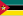

List of countries by exports
{kind=link}
The following article lists different countries and territories by their exports according to data from the World Bank. Included are merchandise exports and service exports. Merchandise exports are goods that are produced in one country and sold to another country. Service exports refer to the cross-border sale or supply of services by residents of one country to residents of another country. Some countries have significantly high export figures relative to their economy's size (i.e. Netherlands, Singapore and UAE) due to their high amount of re-exports.
By total exports
[edit]| Country | Exports | Year | Top export (2021)[2] |
|---|---|---|---|
| 3,511,248 | 2023 | Broadcasting equipment | |
| 3,051,824 | 2023 | Petroleum | |
| 2,104,251 | 2023 | Cars | |
| 1,074,781 | 2023 | Gold | |
| 1,051,679 | 2023 | Packaged medications | |
| 949,983 | 2023 | Petroleum | |
| 920,737 | 2023 | Cars | |
| 773,223 | 2023 | Petroleum | |
| 793,588 | 2023 | Packaged medications | |
| 778,000 | 2023 | Intergated Circuits | |
| 769,534 | 2023 | Integrated circuits | |
| 753,000 | 2022[3] | Petroleum | |
| 731,813 | 2023 | Blood | |
| 717,677 | 2023 | Petroleum | |
| 673,305 | 2023 | Integrated circuits | |
| 661,627 | 2023 | Gold | |
| 649,312 | 2023 | Cars | |
| 615,829 | 2023 | Cars | |
| 536,128 | 2022[4] | Integrated circuits | |
| 535,173 | 2023 | Vaccines | |
| 469,264 | 2023 | Car parts | |
| 465,432 | 2023 | Petroleum | |
| 447,506 | 2023 | Iron ore | |
| 389,625 | 2023 | Iron ore | |
| 374,265 | 2023 | Broadcasting equipment | |
| 370,973 | 2023 | Petroleum | |
| 352,514 | 2023 | Cars | |
| 336,871 | 2023 | Data processing equipment | |
| 321,076 | 2022 | Petroleum | |
| 315,924 | 2022 | Coal | |
| 310,493 | 2022 | Cars | |
| 299,656 | 2022 | Integrated circuits | |
| 273,868 | 2022 | Packaged medications | |
| 268,277 | 2022 | Cars | |
| 217,731 | 2022 | Cars | |
| 166,098 | 2022 | Diamonds | |
| 163,585 | 2022 | Iron | |
| 161,693 | 2022 | Petroleum | |
| 161,609 | 2022 | Cars | |
| 135,951 | 2022 | Platinum | |
| 129,165 | 2022 | Cars | |
| 125,788 | 2022 | Paper | |
| 114,157 | 2022 | Cars | |
| 110,923 | 2022 | Petroleum | |
| 107,077 | 2022 | Copper | |
| 105,756 | 2022 | Petroleum | |
| 105,648 | 2021 | Cars | |
| 102,947 | 2022 | Soybeans | |
| 98,518 | 2022 | Integrated circuits | |
| 94,052 | 2022 | Petroleum | |
| 78,260 | 2022 | Petroleum | |
| 76,917 | 2022[5] | Plastic | |
| 76,295 | 2022 | Petroleum | |
| 72,497 | 2022 | Petroleum | |
| 71,197 | 2022 | Copper | |
| 69,091 | 2022 | Petroleum | |
| 68,664 | 2022 | Petroleum | |
| 61,386 | 2022 | Petroleum | |
| 60,712 | 2022 | Copper | |
| 60,138 | 2022 | Clothing | |
| 59,787 | 2022[6] | ||
| 58,556 | 2022 | Fertilizers | |
| 57,462 | 2022 | Milk | |
| 57,018 | 2022 | Sunflower seed oil | |
| 56,400 | 2022 | Packaged medications | |
| 50,120 | 2022 | Petroleum | |
| 47,274 | 2022 | Petroleum | |
| 46,767 | 2022 | Fertilizers | |
| 46,324 | 2021 | Petroleum | |
| 41,952 | 2022 | Petroleum | |
| 39,900 | 2022 | Insulated wire | |
| 38,700 | 2022 | Clothing | |
| 36,338 | 2022 | Petroleum | |
| 32,511 | 2022 | Wood | |
| 30,097 | 2018 | Aluminium | |
| 28,854 | 2022 | Wood | |
| 28,684 | 2016 | Petroleum | |
| 28,092 | 2022 | Medical instruments | |
| 27,338 | 2021 | Copper | |
| 26,485 | 2021 | Jewelry | |
| 25,951 | 2022 | Boats | |
| 25,497 | 2022 | Clothing | |
| 25,417 | 2022 | Integrated circuits | |
| 25,102 | 2022 | Gold | |
| Ghana | 23,901 | 2021 | Gold |
| 22,605 | 2022 | Beef | |
| 22,354 | 2021 | Copper | |
| 21,926 | 2022 | Gold | |
| 19,743 | 2021 | Clothing | |
| 19,605 | 2010 | Olive oil | |
| 17,523 | 2019 | Clothing | |
| 16,230 | 2021 | Cocoa beans | |
| 15,318 | 2021 | Clothing | |
| 14,970 | 2022 | Soybeans | |
| 14,468 | 2022 | Gold | |
| 13,864 | 2021 | Clothing | |
| 13,082 | 2020 | Clothing | |
| 12,867 | 2022 | Aluminium | |
| 12,437 | 2022 | Copper | |
| 11,825 | 2021 | Tea | |
| 11,624 | 2021 | Petroleum | |
| 11,523 | 2022 | Energy | |
| 11,467 | 2021 | Petroleum | |
| 11,202 | 2021 | Petroleum | |
| 10,989 | 2022 | Copper | |
| 10,265 | 2021 | Gold | |
| 10,150 | 2022 | Automobile catalysts | |
| 10,146 | 2021 | Gold | |
| 10,129 | 2022 | Clothing | |
| 9,699 | 2022 | Copper | |
| 9,537 | 2020 | Petroleum | |
| 9,496 | 2021 | Coffee | |
|  Mozambique | 9,409 | 2022 | Coal |
| 9,243 | 2022 | Clothing | |
| 8,769 | 2020[7] | Cigars | |
| 8,555 | 2020 | Gold | |
| 8,164 | 2020[8] | Petroleum | |
| 8,086 | 2021 | Copper | |
| 7,930 | 2021 | Diamonds | |
| 7,870 | 2022 | Clothing | |
| 7,819 | 2021 | Energy | |
| 7,449 | 2021 | Petroleum | |
| 7,057 | 2022 | Footwear | |
| 6,656 | 2022[9] | Petroleum | |
| 6,503 | 2022[10] | Petroleum | |
| 6,424 | 2022 | Aluminium oxide | |
| 6,233 | 2021 | Gold | |
| 6,177 | 2021 | Gold | |
| 5,977 | 2022 | Insulated wire | |
| 5,908 | 2022 | Gold | |
| 5,390 | 2015 | Petroleum | |
| 5,381 | 2021 | Gold | |
| 5,287 | 2018 | Gold | |
| 5,263 | 2020 | Gold | |
| 5,160 | 2021 | Palm oil | |
| 5,096 | 2022 | Fish | |
| 5,080 | 2022 | Copper | |
| 4,918 | 2022 | Fish | |
| 4,700 | 2020 | Petroleum | |
| 4,652 | 2021 | Petroleum | |
| 4,640 | 2021 | Petroleum | |
| 4,154 | 2021 | Cotton | |
| 3,652 | 2020 | Boats | |
| 3,577 | 2022 | ||
| 3,544 | 2022 | Stone | |
| 3,420 | 2021[11] | Dish washing machines | |
| 3,341 | 2021 | Vanilla | |
| 3,292 | 2021 | Gold | |
| 3,202 | 2021 | Petroleum | |
| 3,181 | 2021 | Iron ore | |
| 3,178 | 2022 | Aluminium | |
| 3,004 | 2022 | Petroleum | |
| 2,994 | 2022 | Gold | |
| 2,722 | 2022 | Soybean oil | |
| 2,599 | 2022 | Gold | |
| 2,414 | 2021 | Cars | |
| 2,376 | 2022 | Water | |
| 2,315 | 2021 | Petroleum | |
| 2,228 | 2017 | Rum | |
| 2,131 | 2021 | Soft drink concentrates | |
| 1,875 | 2016 | Ferroalloys | |
| 1,753 | 2022 | Gold | |
| 1,751 | 2021 | Boats | |
| 1,721 | 2020 | Petroleum | |
| 1,538 | 2021 | Tobacco | |
| 1,487 | 2021 | Gold | |
| 1,476 | 2020 | Gold | |
| 1,363 | 2022[12] | Goats | |
| 1,345 | 2022 | Sugarcane | |
| 1,280 | 2021 | Petroleum | |
| 1,241 | 2021 | Clothes | |
| 1,213 | 2011 | Fish | |
| 1,202 | 2016 | Pearls | |
| 1,136 | 2021 | Boats | |
| 1,114 | 2021 | Titanium ore | |
| 1,066 | 2022 | Diamonds | |
| 938 | 2016 | Petroleum | |
| 855 | 2022 | Fish | |
| 827 | 2018 | Molluscs | |
| 791 | 2022 | Ferroalloys | |
| 788 | 2021 | Petroleum | |
| 752 | 2021 | Petroleum | |
| 711 | 2021 | Petroleum | |
| 554 | 2019 | Iron ore | |
| 411 | 2022 | Wood | |
| 394 | 2021 | Fish | |
| 393 | 2021 | Broadcasting equipment | |
| 375 | 2011[13] | Zinc | |
| 335 | 2021 | Cashews | |
| 316 | 2022[14] | Gold | |
| 285 | 2018 | Gold | |
| 171 | 2022 | Coconut oil | |
| 140 | 2021 | Cloves | |
| 138 | 2021 | Boats | |
| 135 | 2021 | Cashews | |
| 130 | 2021 | Boats | |
| 126 | 2014 | Fish | |
| 123 | 2021 | Medical instruments | |
| 89 | 2021 | Fish | |
| 75 | 2021 | Cocoa beans | |
| 60 | 2022 | Shellfish | |
| 31 | 2018 | Fish | |
| 12 | 2021 | Computers | |
| 11 | 2021 | Fish | |
| 3 | 2021 | Boats |
By merchandise exports
[edit]By service exports
[edit]See also
[edit]- List of countries by exports per capita
- List of top exporting countries by product category
- List of countries by high tech exports
- List of countries by imports
- List of countries by leading trade partners
- List of Chinese administrative divisions by exports
- List of U.S. states and territories by exports and imports
- List of German states by exports
- List of countries by oil exports
References
[edit]- ^ "Exports of goods and services (BoP, current US$)". World Bank Open Data. Retrieved 20 August 2023.
- ^ "The Atlas of Economic Complexity by @HarvardGrwthLab". atlas.cid.harvard.edu. Retrieved 17 January 2024.
- ^ "الإمارات الـ 11 عالمياً على مستوى الصادرات السلعية بإجمالي 599 مليار دولار وبنسبة نمو بلغت 41% خلال عام 2022". Ministry of Economy UAE (in Arabic). Retrieved 20 August 2023.
- ^ UNCTAD. "UNCTADstat - General Profile: China, Taiwan Province of". UNCTADstat. Retrieved 8 July 2024.
- ^ "Exports of goods and services (current US$) - Iran, Islamic Rep". World Bank Open Data. Retrieved 20 August 2023.
- ^ "Exports of goods and services (current US$) - Puerto Rico". World Bank Open Data. Retrieved 20 August 2023.
- ^ "Exports of goods and services (current US$) - Cuba". World Bank Open Data. Retrieved 20 August 2023.
- ^ "Exports of goods and services (current US$) - Turkmenistan". World Bank Open Data. Retrieved 20 August 2023.
- ^ "Exports of goods and services (current US$) - Equatorial Guinea". World Bank Open Data. Retrieved 20 August 2023.
- ^ "Exports of goods and services (current US$) - Chad". World Bank Open Data. Retrieved 20 August 2023.
- ^ "Exports of goods and services (current US$) - San Marino". World Bank Open Data. Retrieved 20 August 2023.
- ^ "Exports of goods and services (current US$) - Somalia". World Bank Open Data. Retrieved 20 August 2023.
- ^ "Exports of goods and services (current US$) - Eritrea". World Bank Open Data. Retrieved 20 August 2023.
- ^ "Exports of goods and services (current US$) - Central African Republic". World Bank Open Data. Retrieved 20 August 2023.
| Terminology |
| ||||||||||
|---|---|---|---|---|---|---|---|---|---|---|---|
Organizations and policies | |||||||||||
| Political economy | |||||||||||
| Regional organizations |
| ||||||||||
| Exports by product |
| ||||||||||